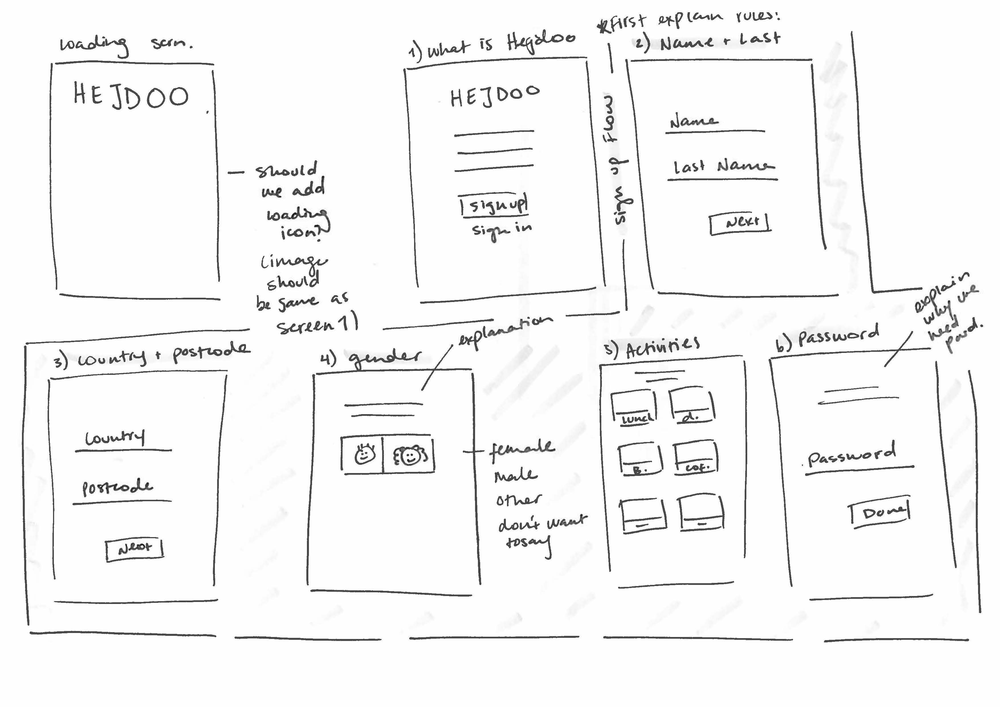

FriendHood is a platonic friendship mobile app for those who are looking for meet new and interested people in the city they live. I joined FriendHood and its two founders and helped them to implement key features before their launch to the app store. One of these features was the sign up flow which previously was done manually on the website, with the beta version of the App. Along with the launch of the Sign Up feature, I designed a new website for them and developed a branding styleguide and icon library.
FriendHood - Sign Up Feature and Branding
A pamphlet describing the app designed by me for FriendHood to be distributed in a conference.
Getting the big picture
In order to understand what users would experience during the onboarding, I worked closely with the App developer and marketing team. I made a sketch of all the requirements and planned out in which order the steps would be and what the user would need to do in each specific step.
First brainstorming sketch
I then made sketches of what the entire flow would like screen by screen. We decided that the user would have to accept a series of rules before signing up to make clear the purpose of the App. After accepting to these rules, the user needs to complete filling important information to use the App which is followed by an onboarding once they finish the sign up flow.

Sketches of the rules

Sketches of the rest of the sign up flow
After having a clear idea of the sketches, I made some digital wireframes which I shared with the developer and marketing team to make sure that we were all on the same page.
Digital wireframes based on the sketches
Digital wireframes based on the sketches
UI Design
Once I started to implement the UI to the wireframes, I used the styling of previously designed UI elements for the App. I also made sure to create new font styles and buttons when necessary. To do this, I made a styleguide for the App where I defined the main buttons, font styles, colors and other UI elements such as form styles.
A section of the styleguide made in Sketch
Icon library created for the app and website designed
As part of the launch, I also designed a new website where they could display buttons to Google Play and the App Store where users would now be able to download the App and sign up independently. I decided to keep the website very simple and straight to the point to lead users to learn more by downloading the App. I first did some research on other inspirational websites for products that are app-centric and then made a wireframe of what I thought could be the best way to layout the information architecture. After agreeing upon the design with my colleagues, I designed the the homepage in Sketch.
My initial design included different sections describing each feature. We also had the idea of showing a map of where in the world you could find the App. For the initial launch the App was planned to only work in Berlin. Therefore, we decided to leave the map as an idea for the future when the App is launched in other markets. In addition, due to the tight deadline we had to launch the new features to the app store, the developer and I decided to make a simplified version of the website showing only the screens and the original header and footer I had designed.
Wireframe for the homepage
Responsive designs for the homepage
Design for the map feature in the homepage
Final version live on friendhood.co
Outcomes and Learnings
I finished designing the sign up flow and worked with Zeplin to deliver the designs to the developer. After discussing specific screens, we made amendments and decided which would be the best solutions to technical issues we ran into. The biggest challenge when designing this flow, was thinking of all the possible outcomes that the user could encounter when signing in. Togeter with the developer, we decided how we should communicate to the user and when. For example, if the user encountered a network error, should we let it silently fail or should we show a notification? Should we let me user exit the app manually when the location is incorrect or should the app close automatically? These were interested challenges that will also have to be evaluated with user testing in the future to know if the user experience we decided to implement is the right one.
Additional details such as the homepage design and creating the styleguide were using in bringing the design together. While making the styleguide, for example, I was also able to identify font-styles that did not make sense and were adjusted in the app design. I later reused some of these styles for the website and adjusted their size for a web-friendly view.
The location section of the sign up flow to validate if the app exists in the user's country

An overview of all the screens prepared for the sign up flow
Conclusion
Although this is not the most complicated feature I have had to design, it was very interested to think of problems that users would have encountered and to work closely with the developer and understand the technical challenges behind personalizing the user experience for users. It would have been interested to do a user test before or closely after implementing the feature to make sure that it is a pleasant experience for users. Please take a look at the app in the app store and tell me if you have any feedback!